Hinnang kuupäevade järgi
Kui leidsite piiritaja mais või juunis, on see kindlasti täiskasvanud lind, kes on saabunud Aafrikast(!). Sel ajal poegi veel ei ole.
| Kuu | Mai | Juuni | Juuli | August | September |
|---|---|---|---|---|---|
| Piiritajad | 🟢 | 🟡 | 🐣 | 🔴 |
Legend:
- 🟢 — Saabumine (mai)
- 🟡 — Pesitsemine ja munad (juuni)
- 🐣 — Pojad (juuli)
- 🔴 — Äralend (august)
Tähtis!
Piiritajatel ei ole “lennuvõimelisi poegi”. Poeg oskab pesast lahkudes kohe lennata ja toitu hankida.
Seetõttu ärge püüdke piiritajat puu oksale asetada. Kui piiritaja on maas, vajab ta abi!
Piiritajate vanus: areng 1.–42. päevani
Piiritajate vanus: areng 1.–42. päevani
Allolev tabel kirjeldab piiritajate (Apus apus) poegade arengut 1.–42. päevani, sealhulgas välimus, käitumine ja iseärasused. Fotod on saadaval näidatud asukohtades.
| Kirjeldus | Foto |
|---|---|
| Esimene tund ja esimene päev Embrüonaalset udusulge ei ole. Nahk on õrnalt roosa. Pterüülid ei ole märgatavad. Nok on hele, suunurgad valged. Kuulmekäigud on suletud. Silmalaud on suletud. Keha pikkus 40 mm. Tiiva pikkus 7−8 mm. Kehamass 3,0 (2,5−3,6) g. Toitmine 5:10, 7:28, 7:56, 9:05, 10:03, 11:35, 12:29, 15:40, 15:57, 17:07, 18:29, 20:22, 20:34, 21:17, 21:35 |
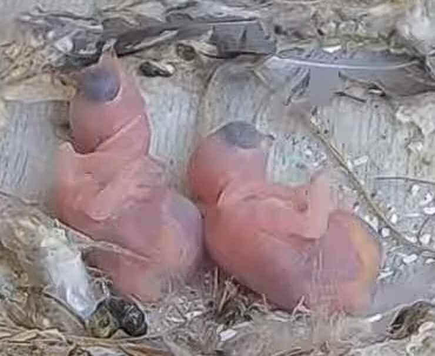 |
| 2. päev Nahk on heledalt roosa. Pterüülid on märgatavad väikeste tumedate punktidena (suurusega 0,2 mm) õlgadel ja sabapoolses osas. Selja- ja kõhupoolsel küljel pterüülid ei ole nähtavad. Kuulmekäigud on suletud. Silmalaud on suletud. Nok ja küünised tumenevad. Keha pikkus 56 mm. Tiiva pikkus 11 mm. Kehamass 5,5 (5,0−6,6) g. Toitmine 5:36, 7:23, 8:18, 10:03, 13:06, 16:16, 17:32, 19:16, 20:36, 20:58 |
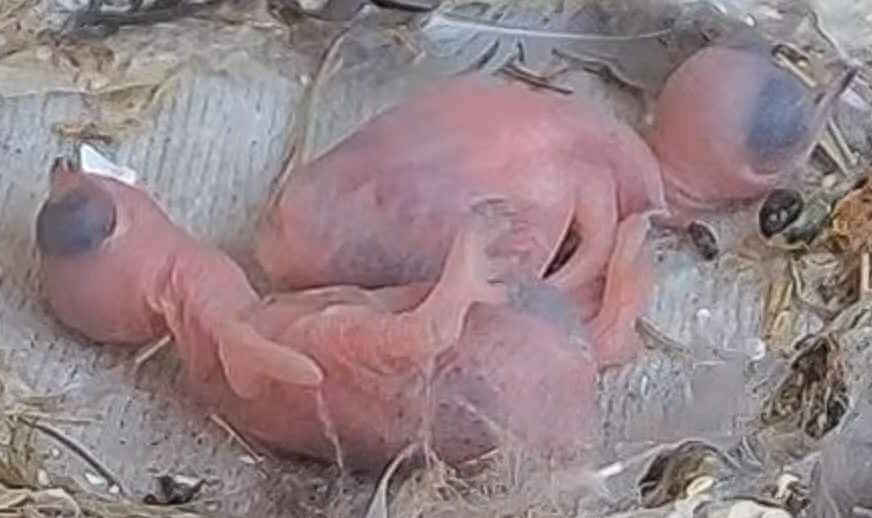 |
| 3. päev Sulepterüülid on märgatavad nõrgalt nähtavate katkendlike joonte kujul (naha all arenevad suled) pea-, õla-, tiiva-, selja- ja rinna pterüülides (iga sule alguse suurus 0,5–1,5 mm, suurimad õla pterüülid – 1,5 mm). Tiiva pterüülid on 1 mm laiuse katkendliku ribana. Kuulmekäigud on suletud. Silmalaud on suletud. Nok on heledalt hall, küünised heledad. Keha pikkus 60 mm. Tiiva pikkus 12 mm. Kehamass 8,5 (7,5−10,4) g. Toitmine 4:02, 4:13, 5:23, 5:58, 6:34, 9:22, 10:42, 12:40, 13:44, 13:57, 14:52, 16:06, 16:45, 17:56, 18:08, 20:00, 20:55 |
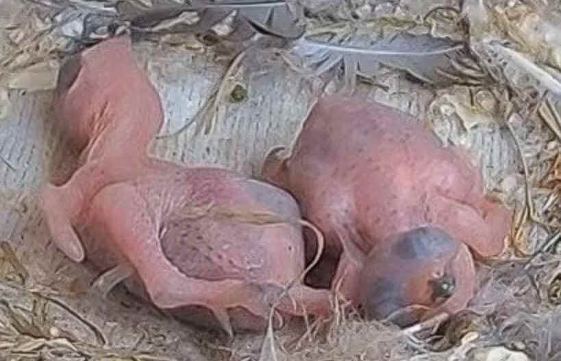 |
| 4. päev Kõik pterüülid on märgatavad katkendlike ja triibuliste joonte kujul, kus suled arenevad naha all. Pea-, õla-, tiiva-, selja- ja rinna pterüülides on suled märgatavad punktide, triipude või väikeste joonte kujul (0,5−1 mm). Õla pterüülid ja selja triibujooned on suurused 1,5−2 mm. Nok on heledalt hall. Munahammas on olemas. Küünised on heledad. Kuulmekäigud on suletud. Silmalaud on suletud. Keha pikkus 65 mm. Tiiva pikkus 12−16 mm. Kehamass 10,7 (9,6−12,8) g (kõhn – 5,6 g). Toitmine 4:18, 4:51, 5:18, 6:03, 7:07, 9:01, 10:44, 11:01, 12:37, 13:12, 14:51, 15:44, 16:36, 18:07, 18:14, 19:48, 20:30, 20:44, 21:19 |
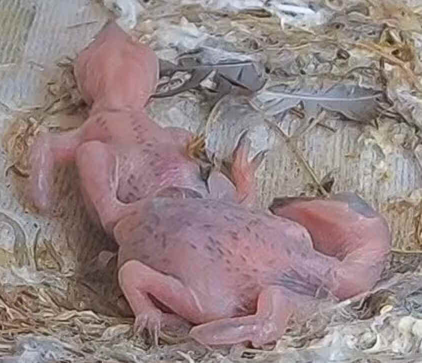 |
| 5. päev Pterüülid on selgelt märgatavad triibuliste ribadena, kus suled arenevad naha all (õla-, selja- ja külgmistes pterüülides sule suurus 2−3 mm; rinna- ja jalapterüülides: 2−1,7 mm). Tiiva pterüülid on 2 mm laiuste tumedate ribadena. Tulevaste esmasulgede ja sabasulgede kohal on väikesed valkjad punktid. Kuulmekäigud on suletud. Silmalaud on suletud. Nok on tume, munahammas on säilinud. Küünised on heledalt hallid. Keha pikkus 70−75 mm. Tiiva pikkus 15−18 mm. Kehamass 13,0 (10,7−14,8) g. Toitmine 3:47, 4:03, 4:38, 4:43, 5:25, 7:56, 10:17, 11:59, 12:55, 13:34, 14:02, 14:33, 15:38, 16:38, 17:36, 19:06, 18:44, 19:41, 20:34, 20:35, 21:25 |
 |
| 6. päev Poeg on täiesti tume naha all areneva sulestiku tõttu. Silmalaud on lahti. Kuulmekäik on suletud. Selja poolel on naha alt välja tulnud valkjad udusulgede otsad (nahaalune sule osa suurusega 3−4 mm). Põhisulg on nähtav heledate muhkudena, mis ilmuvad kahe ribana udusulgede vahel. Pea on tumenenud naha all areneva sulestiku tõttu. Tiiva pterüülid on tumedate sooniliste ribadena (5 mm). Esmasuled on väikeste hambakestena (0,2 mm). Sabasuled näevad samuti välja. Kõhupoolel areneb sulestik naha all (3 mm). Munahammas on säilinud. Keha pikkus 78−83 mm. Tiiva pikkus 20−23 mm. Kehamass 17,5 (16,3−19,2) g. Toitmine 4:14, 4:21, 6:34, 8:34, 11:50, 12:43, 13:04, 14:43, 14:45, 16:07, 17:06, 17:16, 18:47, 18:51, 20:15, 20:27, 20:59 |
 |
| 7. päev Udusulg on naha alt välja tulnud (5 mm) väikeste valkjate tutikestena (0,5−1 mm). Naha all kasvavate sulgede jooned on sulandunud tumedateks laikudeks ja ribadeks pea-, tiiva- ja õla pterüülides. Selja-, nimme-, kõhu- ja jalapterüülid on kaetud nahaaluste sulgede triipude ja joontega (3−6 mm). Silmad on veidi avatud. Kuulmekäigud on veidi avatud. Keha pikkus 80−86 mm. Tiiva pikkus 16−26 mm. Kehamass 16,0 (19,8−22,2) g. Toitmine 3:48, 5:11, 6:51, 8:11, 9:23, 10:05, 10:29, 12:13, 13:26, 13:50, 14:36, 15:06, 16:49, 17:06, 18:26, 19:36, 20:01, 20:54, 21:13 |
 |
| 8. päev Kõik pterüülid on selgelt nähtavad naha all areneva sulestiku ribade ja kumerate mustade triipudena. Selja-nimme pterüülil on naha alt välja tulnud sulgede otsad lõhkenud – ilmunud on arvukad valkjashallid väikesed udusulgede tutikesed (1−2 mm), nahaalune sule osa (4−5 mm). Udusulg on naha alt välja tulnud ka rinna pterüülil. Nok ja küünised on mustad. Munahammas on säilinud. Kuulmekäik on avanenud. Keha pikkus 82−88 mm. Tiiva pikkus 20−29 mm. Esmasulgede pikkus 0,2−1,7 mm. Sabasulgede pikkus 0,2−1,0 mm. Kehamass 18,0 (16,3−22,0) g. Toitmine 3:39, 3:52, 4:26, 4:56, 7:02, 11:24, 12:56, 13:22, 13:50, 15:00, 15:44, 18:52, 19:59, 20:09, 21:05 |
 |
| 9. päev Arvukad nõeljad sulgede algmed on ilmunud pea- (1 mm), selja-, tiiva- ja sabapterüülidesse (3−4 mm). Õlgadel, seljal ja ülasabal on arvukad udusulgede tutikesed (3−4 mm). Silmad on veidi avatud. Kuulmekäik on avatud. Keha pikkus 90−95 mm. Tiiva pikkus 33−36 mm. Kehamass 25,0 (23,8−26,7) g. Toitmine 3:59, 4:23, 4:39, 8:59, 12:07, 12:44, 13:38, 14:45, 15:02, 15:13, 15:49, 16:39, 17:25, 18:04, 19:00, 19:19, 20:02, 20:28 |
 |
| 10. päev Arvukad udusulgede tutikesed (3−4 mm) avanevad seljapoolel ja moodustavad hõreda koheva katte õlgadel ja keha sabapoolses osas. Selja-nimme pterüülil on suled väikeste algmetena (1−1,5 mm). Silmad on poolenisti avatud. Munahammas on säilinud. Esma- ja teisesuled ning sabasuled on väikeste algmete (või torukestena). Keha pikkus 98−103 mm. Tiiva pikkus 37−42 mm. Esmasulgede pikkus 3−8 mm. Sabasulgede pikkus 1−3 mm. Kehamass 23,5 (15,5−31,1) g. Toitmine 6:20, 8:59, 9:38, 12:43, 14:43, 16:29, 17:39, 18:08, 20:23, 20:45, 21:02, 21:08 |
 |
| 11. päev Kohevus on suurenenud))) Toitmine 3:46, 3:54, 4:26, 5:16, 6:31, 8:16, 9:41, 10:23, 12:44, 13:05, 14:44, 15:18, 15:57, 15:58, 16:58, 17:44, 18:54, 20:04, 20:11 |
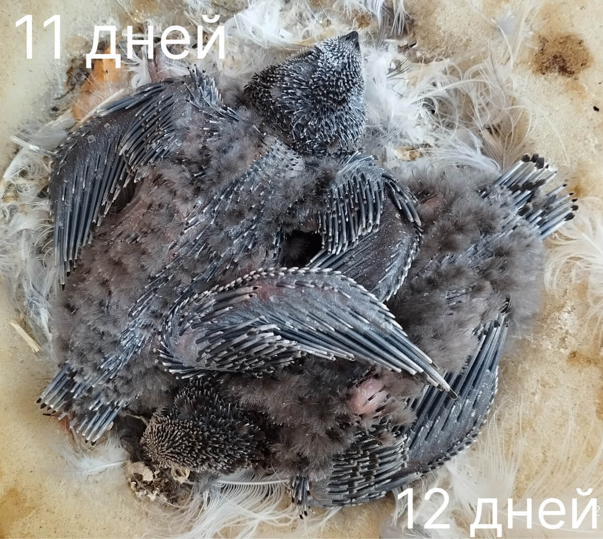 |
| 12. päev Poja välimus sarnaneb 11-päevasega, vaid sulgede torukesed (algmed) on pikemad. Pea-, tiiva- ja sabapterüülides on torukesed 3−5 mm. Selja- ja keha sabapoolsel osal on hõredad udusulgede tutikesed (3−5 mm). Esmasuled (2−5) on torukestes. Suured esmasulgede kattekihid on sama pikkusega. Teisesuled on samuti torukestes (kattekihid 1−4 mm). Sabasuled on torukestes (3−5 mm), mis on otstes lõhkenud. Tiiva pikkus 38−45 mm. Esmasulgede pikkus 4−8 mm. Sabasulgede pikkus 3−5 mm. Kehamass 28,5 (24,2−34,2) g. Toitmine 3:58, 5:15, 5:53, 7:22, 7:48, 8:28, 9:39, 10:03, 10:44, 11:53, 11:58, 14:15, 14:48, 15:30, 16:16, 17:41, 18:17, 19:07, 19:50, 20:42, 20:46, 21:10 |
 |
| 13. päev Poeg on kaetud lühikeste terashallide torukestega, mis on otstes lõhkenud. Peas on nõeljad algmed ja väikesed ookerhallid tutikesed areneva sulestiku (0,5−1 mm). Seljal ja kõhupoolel on hõre udusulg (3−5 mm). Rinna pterüülil on peenikesed torukesed (3 mm). Esmasuled (7−8) on väikeste tutikestega (0,5 mm). Teisesuled on torukesed (5 mm). Sabasuled on torukesed (keskmised lühikesed, äärmised pikad). Keha pikkus 95−103 mm. Esmasulgede pikkus 7−8 mm. Sabasulgede pikkus 0,5−7 mm. Kehamass 28,5 (17,6−39,0) g. Toitmine 4:38, 5:59, 6:06, 7:12, 8:49, 9:14, 10:57, 11:16, 13:24, 13:26, 14:38, 15:04, 15:58, 17:06, 17:11, 19:14, 19:29, 20:24, 20:33, 20:58, 21:01, 21:11 |
 |
| 14. päev Poeg on kaetud pikkade sulgede torukestega, mis on otstes lõhkenud, ja tiheda udusulgedega. Udusulg hargneb tugevalt otstes, see on pooleldi lahti, kohevad tutikesed ümbritsevad tihedalt peamisi selja-nimme ja kõhu pterüüle, mis on kaetud nõelja algmete ja torukestega. Pea on kaetud väikeste hallikas-ookerjate tutikestega. Esmasuled on torukestes tutikestega (1−4 mm). Teisesuled on samuti väikestes torukestes väikeste tutikestega (1 mm). Sabasuled on väikestes tutikestes (1−2 mm). Udusulgede pikkus 5−6 mm. Peamiste pterüülide torukeste pikkus – 5 mm. Keha pikkus 110 mm. Tiiva pikkus 52 mm. Esmasulgede pikkus 13 mm. Sabasulgede pikkus 10 mm. Kehamass 28,0 (17,5−38,0) g. Toitmine 3:47, 4:52, 5:00, 6:12, 7:55, 8:16, 9:52, 10:28, 12:00, 12:55, 13:14, 15:32, 15:58, 17:14, 17:16, 18:41, 18:49, 19:49, 20:31, 20:42, 20:57 |
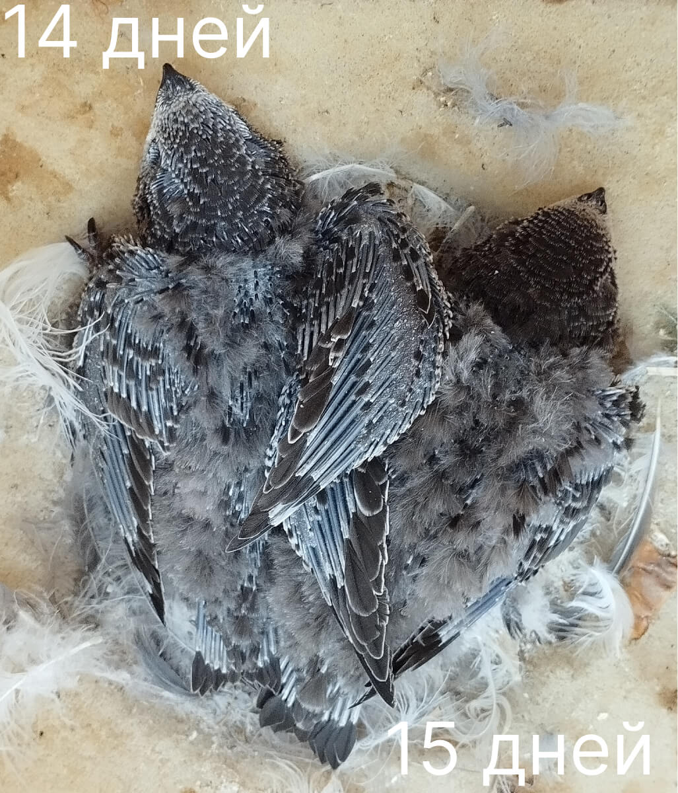 |
| 15. päev Poeg on kaetud pikkade sulgede torukeste ja tiheda tumehalli udusulgedega, mis on eriti hästi arenenud selja-nimme pterüülide ümber. Pea on kaetud väikeste torukeste ja põhisulgede tutikestega. Esmasuled on pikkades torukestes ja tutikestega (2−5 mm) otstes. Teisesuled näevad samuti välja (tutikesed: 2−3 mm). Sabasulgede tutikesed on rohkem avanenud (5−7 mm). Munahammas on olemas. Keha pikkus 110 mm. Tiiva pikkus 60 mm. Esmasulgede pikkus 19−20 mm. Sabasulgede pikkus 10−17 mm. Kehamass 33,0 (28,5−37,8) g. Toitmine 4:38, 4:42, 6:08, 6:26, 8:26, 9:17, 10:42, 13:58, 14:47, 16:17, 16:49, 19:00, 20:12, 20:54, 20:59 |
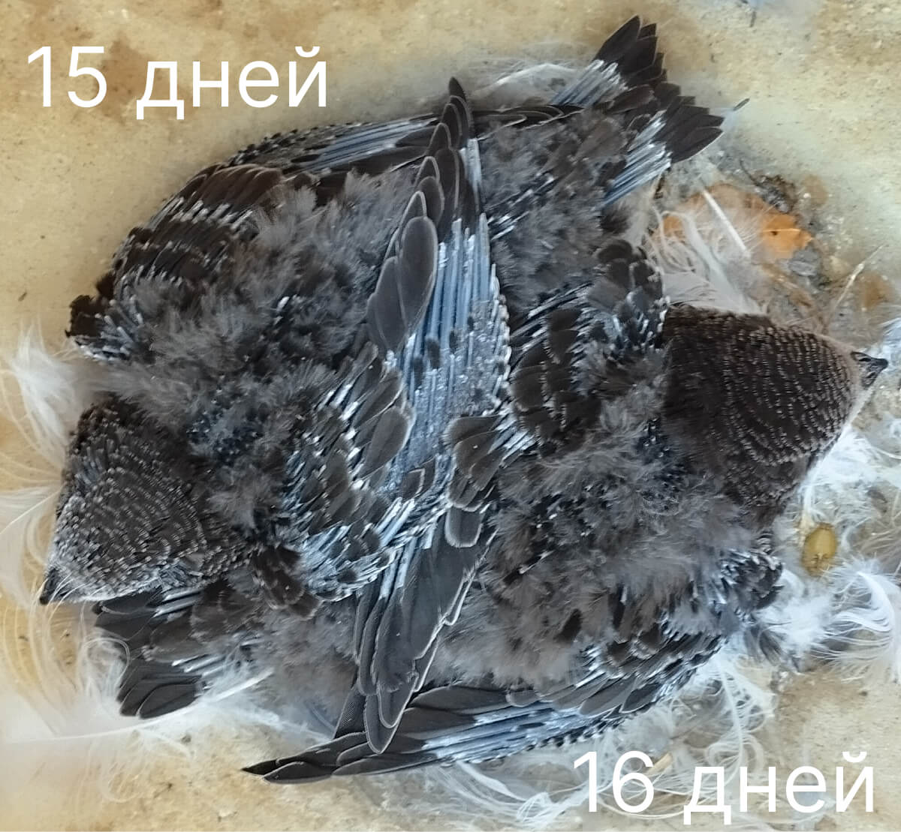 |
| 16. päev Poeg on kaetud väikeste kontuursete sulgede tutikestega, mis arenevad ja avanevad kõigil pterüülidel (väikestes tutikestes, 1−3 mm, pea-, rinna- ja selja-nimme pterüülides). Täielikult avanenud udusulg on väga tihe ja hargneb otstes, ümbritsedes kontuursete sulgede ribasid (väikestes torukestes tutikestega otstes) selja-nimme pterüülis. Esmasuled on tutikestega (5−7 mm), suured kattekihid 5–20 mm (tutikesed 1−6 mm). Teisesuled 5–20 mm (tutikesed 0,2−0,5 mm). Sabasuled on pikkades torukestes ja väikestes tutikestes (0,2−3 mm). Nok ja küünised on mustad. Munahammast ei ole. Silmad on laialt avatud (täielikult). Tiiva pikkus 68 mm. Esmasulgede pikkus 15−25 mm. Sabasulgede pikkus 7−18 mm. Kehamass 35,5 (26,6−45,0) g. Toitmine 4:20, 4:30, 6:16, 6:38, 8:25, 9:07, 9:54, 10:20, 10:56, 12:08, 14:10, 14:45, 15:46, 16:41, 19:01, 19:13, 20:15, 20:47, 21:00 |
 |
| 17. päev Toitmine 3:50, 3:59, 4:50, 4:51, 5:33, 6:21, 6:50, 8:16, 9:42, 10:08, 11:06, 12:01, 12:13, 13:29, vihm, 16:15, 16:25, 16:55, 16:57, 18:16, 18:33, vihm, 20:05 |
 |
| 18. päev Poeg on rohkelt kaetud tumehallide kohevate udusulgedega. Peamised pterüülid on torukestes (otstes tutikesed) areneva ja avaneva sulestiku, mis vaevu paistab udusulgede alt. Pea on suleline, nokk ümbritsetud väikeste torukeste ja areneva, kuid avanemata sulestiku tutikestega. Sabasuled on avanenud pooleldi (tutikesed 5−10 mm). Tiiva pikkus 78 mm. Sabasulgede pikkus 12−20 mm. Kehamass 37,5 (32,5−43,0) g. Toitmine 4:04, 4:24, 5:08, 5:59, 7:36, 9:40, 10:14, 11:19, 12:29, 12:45, 13:14, 13:23, 14:18, 14:44, 15:27, 15:35, 16:38, 16:50, 17:51, 18:17, 19:29, 19:35, 20:45, 20:49 |
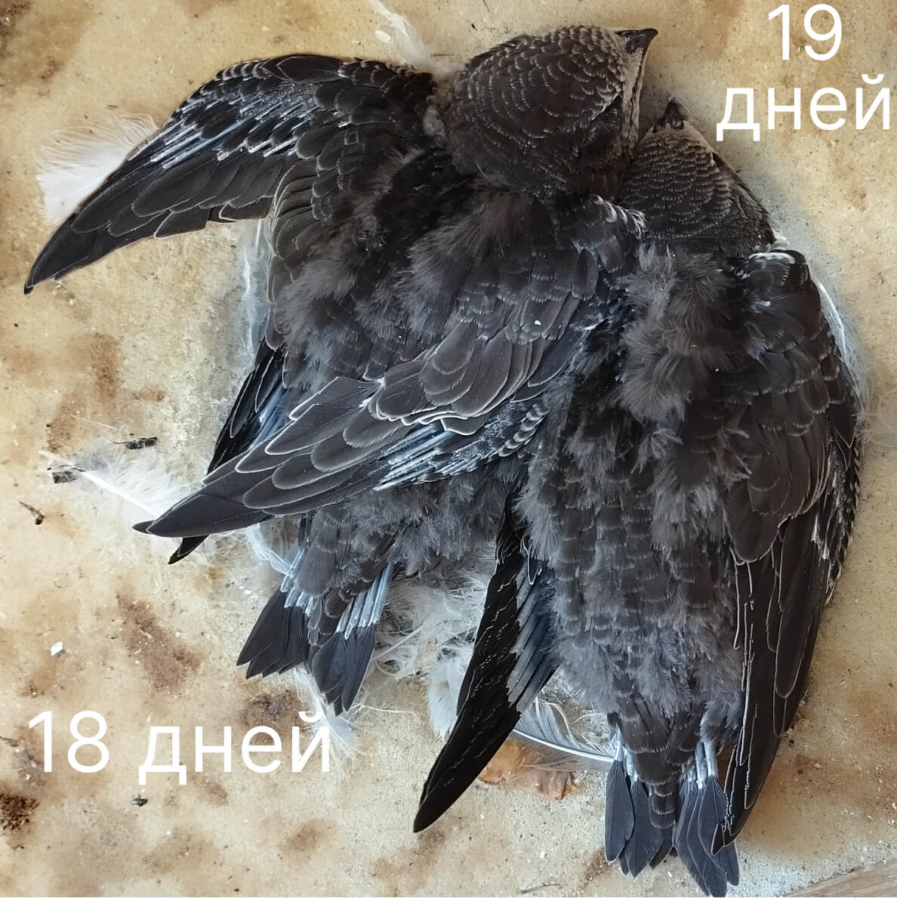 |
| 19. päev Toitmine 4:12, 4:21, 8:25, 9:03, 11:12, 11:31, 12:53, 13:03, 14:30, 15:24, 16:30, 18:07, 18:20, 18:54, 20:13, 20:21 |
 |
| 20. päev Poeg on 1/3 ulatuses suleline, kaetud suurte areneva sulestiku tutikestega. Pea on täielikult suleline. Peamiste pterüülide kontuursete sulgede ribad paistavad selgelt udusulgede alt. Rinna pterüül on kaetud väikeste avanenud sulestiku sulgedega. Esmasuled on avanenud 1/3 ulatuses. Sabasuled on suurtes tutikestes (12−14 mm). Tiiva pikkus 82−91 mm. Sabasulgede pikkus 8−22 mm. Kehamass 40,0 (31,5−48,0) g. Toitmine 4:11, 4:41, 4:48, 6:37, 8:41, 11:42, 12:51, 13:35, 14:03, 15:06, 16:02, 16:30, 17:05, 17:07, 18:59, 19:07, 20:20, 20:30 |
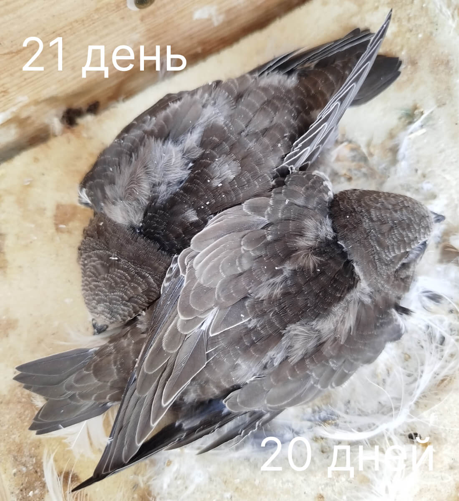 |
| 21. päev Toitmine 4:37, 4:44, 6:24, 7:34, 7:34 (ei, ma ei eksinud, nad saabusid üksteise järel), 10:48, 11:05, 13:57, 16:21, 16:56, 17:51, 18:39, 20:31, 20:33 |
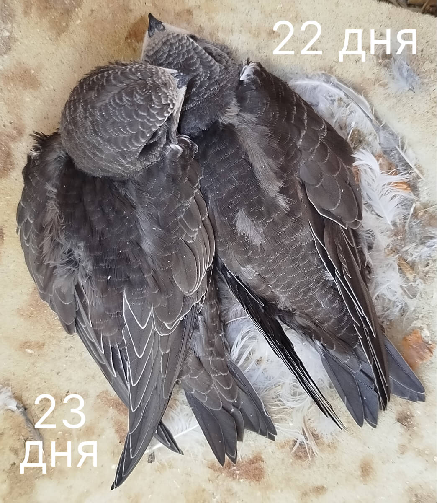 |
| 22. päev Poeg on kaetud suurte sulgede tutikestega, mis on avanenud 1/3 ulatuses. Selja udusulg on 50% ulatuses kaetud kontuursete sulgedega. Tiibadel ja sabal on selgelt näha pooleldi avanenud sulestiku torukesed, mis ei ole kaetud. Silmade ümber ja kaelal on väikesed tutikesed. Esmasuled (9.–6. ja 5.–2.) on avanenud umbes pooleldi (tutikesed 15−22 mm). Teisesuled on samuti pooleldi avanenud (tutikesed 14 mm). Sabasulgede tutikesed (15 mm) moodustavad samuti poole sule pikkusest. Tiiva pikkus 95 mm. Esmasulgede pikkus 38−42 mm. Sabasulgede pikkus 28−34 mm. Kehamass 43,5 (35,7−51,0) g. Toitmine 5:11, 7:12, 7:23, 8:28, 11:45, 11:47, 13:35, 14:03, 14:33, 14:34, 15:12, 17:55, 17:58, 19:22, 19:42, 20:18 |
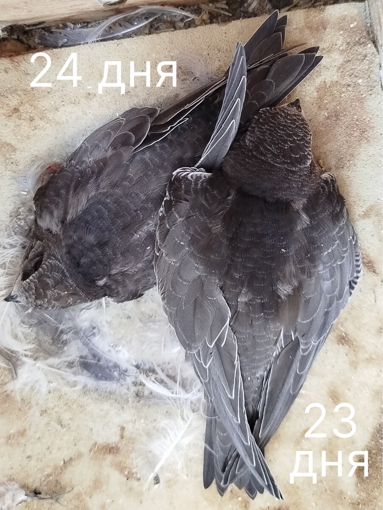 |
| 23. päev Toitmine 5:40, 5:52, 9:24, 11:44, 11:56, 12:38, 13:06, 13:18, 15:53, 16:35, 16:55, 17:31, 18:48, 18:49, 20:16, 20:50 |
 |
| 24. päev Poeg on pooleldi suleline, rohkelt kaetud suurte areneva ja avaneva sulestiku tutikestega. Tiibadel ja sabal ei kata pooleldi avanenud sulestiku torukesed kattekihtide lehvikud (tiiva pind on siiski ühtlane, ilma märgatavate vahedeta). Kaelal on näha pooleldi avanenud sulestiku tutikesed. Udusulg on kaetud selja pterüülide sulgedega ja paistab kontuursete sulgede alt vaid õlgadel ja sabal. Sabasuled on avanenud 2/3 ulatuses (lehevikud 20−30 mm). Tiiva pikkus 105−114 mm. Sabasulgede pikkus 35−45 mm. Kehamass 42,0 (30,8−52,2) g. Toitmine 5:06, 5:46, 6:30, 7:02, 8:12, 8:18, 10:20, 10:25, 11:35, 12:48, 13:02, 14:59, 17:04, 18:03, 18:32, 20:02, 20:10 |
 |
| 25. päev Toitmine 4:40, 4:58, 5:34, 5:48, 6:50, 8:32, 10:25, 10:43, 11:21, 12:33, 13:38, 14:30, 14:45, 16:36, 16:52, 18:21, 18:25, 19:28, 19:49 |
 |
| 26. päev Poeg on 2/3 ulatuses suleline. Sulgede torukesed on nähtavad vaid kaelal ja sabal. Ülejäänud keha pind on pealt kaetud avaneva sulestiku lehvikutega. Udusulg paistab põhisulgede alt kaelal ja ülasabal. Tiib on 70% ulatuses suleline. Paindes on näha nahapind, mis ei ole sulgedega kaetud. Esmasulgede lehvikud on avanenud 2/3 ulatuses. Sabasulgede lehvikud on samuti avanenud 2/3 pikkusest. Tiiva pikkus 110 mm. Esmasulgede pikkus 35−50 mm. Sabasulgede pikkus 43−48 mm. Kehamass 44,5 (37,7−51,0) g. Toitmine 5:04, 5:30, 6:07, 9:02, 10:55, 12:20, 12:35, 13:33, 16:00, 16:31, 17:58, 18:47, 20:01 |
 |
| 27. päev Toitmine 5:20, 5:23, 8:28, 8:32, 11:06, 11:33, 12:51, 13:19, 14:57, 17:31, 17:45, 19:45 |
 |
| 28. päev Poeg on kaetud mustjaspruuni sulestikuga, millel on peened heledad äärised, mis on hästi märgatavad õlgadel ja peas. Selja udusulg on ¾ ulatuses kaetud kontuursete sulgedega. Kõhupoolel on jäänud väike nahalaik, mis ei ole sulgedega kaetud. Tiiva paindes on samuti näha nahapind, mis ei ole sulgedega kaetud. Esmasulgede lehvikud on avanenud 3/4 ulatuses (47−57 mm). Sabasulgede lehvikud on samuti avanenud 2/3 või 3/4 pikkusest (35−43 mm). Tiiva pikkus 125 mm. Esmasulgede pikkus 74−78 mm. Sabasulgede pikkus 45−60 mm. Kehamass 47,5 (45,3−49,4) g. Toitmine 5:11, 5:38, 6:17, 6:44, 8:11, 8:54, 11:49, 12:18, 14:32, 18:25, 19:44, 20:21 |
 |
| 29. päev Toitmine 8:07, 10:29, 11:41, 13:05, 13:45, 15:38, 17:30, 17:46, 19:04, 20:16 |
 |
| 30. päev Välimuselt on poeg täielikult suleline, kuid sulestiku puhumisel on näha arvukaid avanemata sulgede tutikesi. Pealt on tiiva pind ühtlane, kuid esmasulgede torukesed on nähtavad läbi avanenud sulestiku. Tiiva paindes on näha nahalaik. Esmasulgede lehvikud 52−57 mm, torukesed 25−30 mm. Sabasulgede lehvikud 32−35 mm. Tiiva pikkus 123−127 mm. Esmasulgede pikkus 80−85 mm. Sabasulgede pikkus 47−60 mm. Kehamass 45,5 (40,5−49,0) g. Toitmine 5:13, 6:02, 6:47, 7:08, 8:42, 10:35, 11:11, 14:53, vihm, 19:57 |
 |
| 31. päev Toitmine vihm, 11:15, 11:28, 13:51, 14:56, 18:37, 19:22, 20:21 |
 |
| 32. päev Poeg on kaetud hästi avanenud sulestikuga, torukesi ei ole näha. Tiiva pinnal ei ole vahesid: tiiva kattekihid pealt on täielikult avanenud, tiiva alumised kattekihid on torukestes, mille otstes on tutikesed. Esmasuled ei ole lõpuni avanenud (lehevikud 54−69 mm). Teisesuled on avanenud, kuid sulgede alused on ümbristes. Sabasuled ei ole lõpuni avanenud (lehevikud 39−43 mm). Tiiva pikkus 128−136 mm. Esmasulgede pikkus 80−87 mm. Sabasulgede pikkus 54−60 mm. Kehamass 45,3 (37,0−50,5) g. Toitmine Üks vanem on lennanud talvituma, jättes lapsed teise vanema, arvatavasti ema (kuid see pole kindel) hooleks. See tähendab, et toitmiste vahelised intervallid ühe poja puhul on pikenenud ja päevaste toiduportsjonite arv on vähenenud. peaaegu kogu päeva lühiajaline vihm, 13:11, 16:52, 18:16, 19:40 |
 |
| 33. päev Toitmine Öösel algas pikaajaline vihm ja see kestis kogu päeva. Vanem sai majast välja lennata alles õhtul ja tõi toitu vaid korra, toites üht poega. Teine jäi sel päeval nälga. Jätame nende päevade toimetamise järgmiseks aastaks. |
 |
| 34. päev Suleline noor lind. Tiivad on pikad, ilma vahedeta. Selja, pea ja kõhu sulestik on täielikult avanenud. Teisesuled ja tiiva alumised kattekihid on avanenud kuni aluseni. Esmasuled ja tiiva alumised kattekihid on avanemata, sulgede torukesed on tiiva alumisel küljel hästi nähtavad (esmasulgede lehvikud 65−87 mm, torukesed 20−28 mm). Sabasuled on aluses torukestes (15−17 mm). Tiiva pikkus 137−155 mm. Esmasulgede pikkus 92−95 mm. Sabasulgede pikkus 56−63 mm. Kehamass 44,0 (37,5−51,0) g. Toitmine 16:17, 10:20, 12:14, 15:04, 18:07, 19:59, 20:11 |
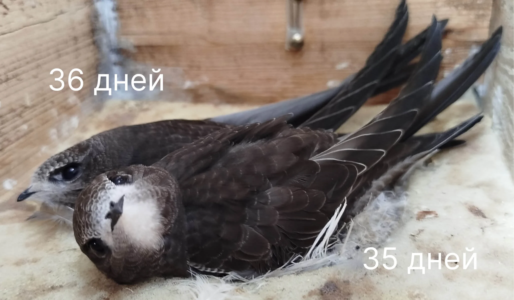 |
| 35. päev Toitmine 5:53, 8:32, 12:53, 13:10, 16:05, 19:24 |
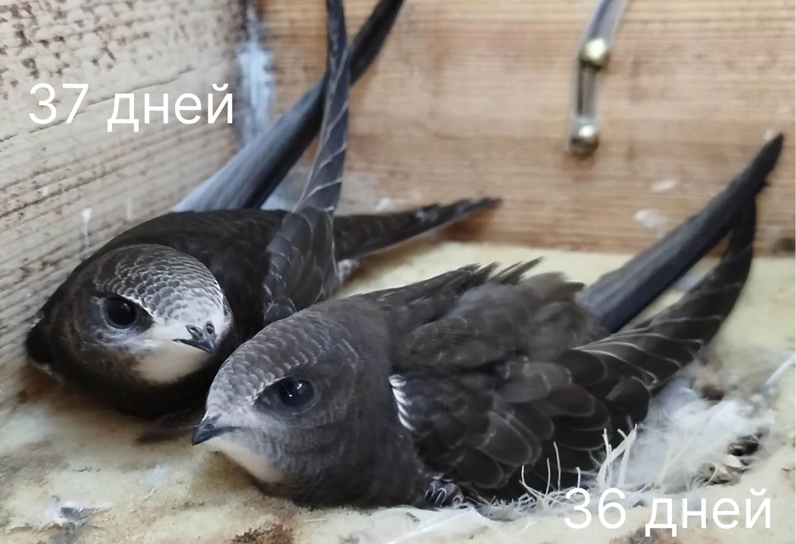 |
| 36. päev Suleline noor lind (välimuselt sarnaneb 35. päevaga). Tiiva alumised kattekihid on aluses torukestes. Esmasuled (9.–3.) on torukestes (17−25 mm). Äärmised sabasuled on aluses torukestes (12−14 mm). Tiiva pikkus 150−160 mm. Sabasulgede pikkus 63−64 mm. Kehamass 47,5 (40,5−54,2) g. Toitmine 15:14, 20:08, 19:27 |
 |
| 37. päev Toitmine 10:24, 12:31, 13:21, 15:17, 17:16, 18:45, 19:51 Kell 20:20 sai esimene poeg 39 päeva vanuseks ja kell 20:44 lendas ta pesast välja, alustades oma esimest lendu Aafrikasse. |
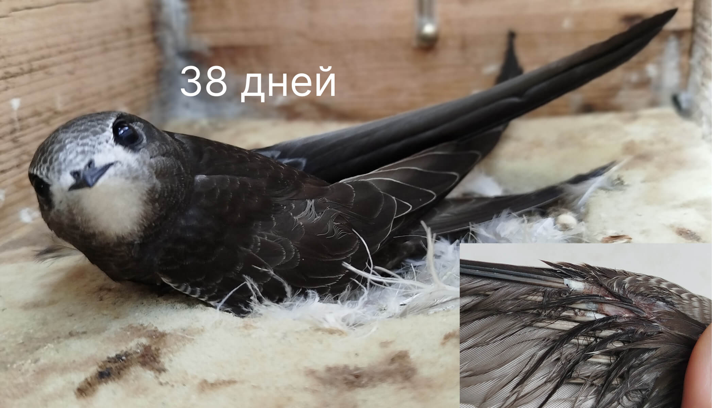 |
| 38. päev Noor lind. Mustjaspruun sulestik peente heledate ääristega katab tihedalt kogu keha pinda. Avanemata sulgede tutikesed on nähtavad seljal, ülasabal ja tiiva alumistel kattekihtidel. Esmasulgedel on aluses ümbrised või torukesed (12−20 mm). Sabasuled on aluses torukestes (10−12 mm). Tiiva pikkus 160−162 mm. Sabasulgede pikkus 60−68 mm. Kehamass 43,0 (34,5−47,5) g. Toitmine 7:19, 11:46, 15:04, 18:36, vihm Meie poja kaal on 42,57 g. |
 |
| 39. päev Teine vanem veetis kogu hommiku pojaga. Lendas ära kell 7 hommikul ega naasnud. Poeg istus terve päeva näljasena. Kell 18:17 sai ta 40 päeva vanuseks. Päeval ma teda uurisin: kaal 38,75 g, sulg oli täielikult avanenud, torukesi ei olnud. Õhtul plaanisin teda toita, kui vanem ei naase, kuid ei jõudnud. Kell 20:30 lendas ta pesast välja ja suundus Aafrikasse venna ja vanemate järel. Lendas näljasena. Me abikaasaga käisime igaks juhuks taskulampidega kontrollimas – kedagi ei leidnud. Head teed! |
 |
| 40. päev Ja need on jälle Mihhaili pojad. |
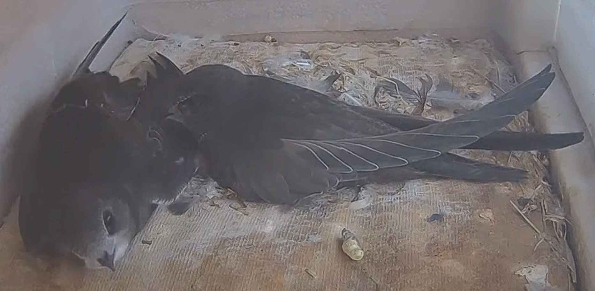 |
| 41. päev Suleline noor lind, mis erineb täiskasvanust heledama sulestiku värvuse poolest, tänu valgetele sulgede ääristele, mis on eriti hästi arenenud peas, tiiva paindes ja keha kõhupoolel. Tiiva pikkus 165−173 mm. Sabasulgede pikkus 64−70 mm. Kehamass 43,0 (37,0−46,7) g. Esimene poeg lahkus pesast öösel. |
 |
| 42. päev Teine poeg lendas pesast välja samuti öösel. |
Märkused
- Kirjeldused: Põhinevad musta piiritaja (Apus apus) tüüpilisel arengul. Täpsete andmete saamiseks vaadake Piiritajapedia.
- Poja vanuse määramiseks kasutage visuaalseid tunnuseid (suled, silmad, käitumine) ja võrrelge ülaltoodud kirjeldustega.
- Lisateabe saamiseks või abi saamiseks võtke ühendust Eesti Metsloomaühinguga.
Allikas
Teave on kohandatud Piiritajapedia andmete põhjal.
</html>